6Uso de Análisis Topológico de Datos (TDA) en datos Biológicos
Instructor: Haydeé Peruyero, Alejandro Ucan-Puc · ~3.5 h (día 4, incluye un descanso)
NotaPreguntas
¿Qué es un grafo de coocurrencia para datos de microbiomas?
¿Cómo podemos utilizar el TDA para analizar estos grafos?
¿Qué conclusiones podemos obtener de esta análisis?
NotaObjetivos
Entender cómo se construyen y utilizan los grafos de coocurrencia en el análisis de datos de microbiomas.
Aprender a aplicar técnicas de TDA para analizar la estructura topológica de estos grafos.
Interpretar los resultados obtenidos del análisis topológico y su relevancia en el contexto biológico.
Tip🧪 Cómo trabajar este capítulo
Escribimos el código juntos, en vivo. Abre tu notebook antes de empezar:
Abrir en Colab
Sin instalar nada: ábrelo en Google Colab con el botón de arriba y guarda una copia (Archivo → Guardar una copia en Drive) para conservar lo que escribas.
En esta página, los bloques de código que empiezan con ⌨️ son los que escribimos juntos; el código de las gráficas viene plegado (Ver el código de la gráfica) y ya está escrito en tu notebook. Si te atrasas, copia el código del Etherpad o ejecuta la celda 🛟 Ponerse al día más cercana.
Trabajamos con 75 metagenomas de rizósfera de cultivos de tres familias de plantas (Poaceae, Solanaceae y Fabaceae; 25 muestras de cada una), provenientes de 19 estudios publicados. Son un subconjunto de la base de datos MicroAgroBiome (Aguilar et al. 2026) (https://agrobiom.matmor.unam.mx). La celda de Setup del notebook descarga y prepara los archivos; después los cargamos:
Código
# Ruta del archivo BIOM (carpeta definida en la celda de Setup)BIOM_PATH = os.path.join(workdir, "taller_genus.biom")# Cargar la tabla BIOMtable = biom.load_table(BIOM_PATH)# función que extrae la información de taxonomía de la tabla BIOM y la convierte en un DataFrame de pandas# Función que extrae y limpia la información taxonómica de una tabla BIOMdef extract_taxonomies(biom_table):""" Extrae la taxonomía de una tabla BIOM y la convierte en un DataFrame de pandas, eliminando los prefijos taxonómicos (k__, p__, c__, o__, f__, g__). """ ranks = ['domain', 'phylum', 'class', 'order', 'family', 'genus'] feature_ids = biom_table.ids(axis='observation') taxonomy_rows = []for feature_id in feature_ids: metadata = biom_table.metadata(feature_id, axis='observation') or {} taxonomy =list(metadata.get('taxonomy') or [])# Eliminar los prefijos taxonómicos taxonomy = [ name.split('__', 1)[1] ifisinstance(name, str) and'__'in nameelse namefor name in taxonomy ]# Completar con None si faltan niveles taxonómicos taxonomy_rows.append( (taxonomy + [None] *len(ranks))[:len(ranks)] )return pd.DataFrame( taxonomy_rows, index=feature_ids, columns=ranks )# Convertir la tabla BIOM a un DataFrame de pandas y extraer la información de taxonomía (con la función definida anteriormente)counts_df = table.to_dataframe(dense=True)taxonomy_df = extract_taxonomies(table)
abundance_table tiene una fila por muestra y una columna por género; metadata_df, una fila por muestra y una columna por cada dato que conocemos de ella.
La tabla de conteo de abundancias se muestra a continuación:
Código
print(" La forma de la tabla de conteo es:", counts_df.shape)counts_df.head()
La forma de la tabla de conteo es: (3330, 75)
SRR12192850
SRR13062011
SRR11128413
SRR12964294
SRR12192805
SRR14458748
SRR8197395
SRR21737280
SRR11092511
SRR14320329
...
SRR14320321
SRR15947149
SRR17036899
SRR14320326
SRR15947150
SRR17036900
SRR15947147
SRR17036903
SRR15947156
SRR17036897
Lactiplantibacillus
87.0
58.0
63.0
64.0
55.0
390.0
245.0
98.0
106.0
1937.0
...
3061.0
55.0
77.0
2387.0
43.0
200.0
51.0
116.0
46.0
87.0
Lactobacillus
150.0
120.0
317.0
215.0
154.0
474.0
622.0
265.0
89.0
1119.0
...
790.0
158.0
348.0
1591.0
119.0
346.0
101.0
258.0
114.0
236.0
Ligilactobacillus
66.0
45.0
140.0
85.0
57.0
182.0
248.0
141.0
40.0
440.0
...
380.0
90.0
109.0
610.0
78.0
102.0
45.0
110.0
39.0
134.0
Limosilactobacillus
152.0
134.0
108.0
190.0
151.0
228.0
534.0
246.0
74.0
821.0
...
381.0
160.0
229.0
832.0
124.0
288.0
111.0
376.0
115.0
361.0
Companilactobacillus
27.0
27.0
101.0
39.0
26.0
109.0
134.0
52.0
21.0
215.0
...
164.0
33.0
9.0
325.0
22.0
19.0
14.0
29.0
19.0
17.0
5 rows × 75 columns
La tabla de taxonomías se muestra a continuación:
Código
print(" La forma de la tabla de taxonomía es:", taxonomy_df.shape)taxonomy_df.head()
La forma de la tabla de taxonomía es: (3330, 6)
domain
phylum
class
order
family
genus
Lactiplantibacillus
Bacteria
Bacillota
Bacilli
Lactobacillales
Lactobacillaceae
Lactiplantibacillus
Lactobacillus
Bacteria
Bacillota
Bacilli
Lactobacillales
Lactobacillaceae
Lactobacillus
Ligilactobacillus
Bacteria
Bacillota
Bacilli
Lactobacillales
Lactobacillaceae
Ligilactobacillus
Limosilactobacillus
Bacteria
Bacillota
Bacilli
Lactobacillales
Lactobacillaceae
Limosilactobacillus
Companilactobacillus
Bacteria
Bacillota
Bacilli
Lactobacillales
Lactobacillaceae
Companilactobacillus
La tabla de metadatos se muestra a continuación:
Código
# Recuerda adaptar la ruta del archivo CSV a tu entorno localmetadata_df = pd.read_csv( os.path.join(workdir, "taller_metadata.csv"), index_col="sample_id")metadata_df.head()
experiment
assay_type
seq_type
plant_part
host_name_order
host_name_family
host_name_genus
host_name_specie
host_name
crop_system
...
longitude
state
country
continent
doi
year
depth_all_biom
depth_rank
fraction_resolved
depth_final
sample_id
SRR12192850
SRX8706683
WGS
Shotgun
Rhizosphere
Poales
Poaceae
Zea
Zea mays
Maize
Monoculture
...
27.330000
Randfontein
South Africa
Africa
10.3390/microorganisms9071419
2021.0
3461820.0
3254502.0
0.940113
3254481.0
SRR13062011
SRX9510017
WGS
other
Rhizosphere
Poales
Poaceae
Zea
Zea mays
Maize
Monoculture
...
26.529611
Lichtenburg
South Africa
Africa
10.1128/MRA.01309-20
2021.0
2605865.0
2442329.0
0.937243
2442320.0
SRR11128413
SRX7764931
WGS
PCR
Rhizosphere
Poales
Poaceae
Zea
Zea mays
Maize
Monoculture
...
25.619009
Mafikeng
South Africa
Africa
10.1186/s13213-020-01591-8
2020.0
2066695.0
1858562.0
0.899292
1444960.0
SRR12964294
SRX9416888
WGS
Shotgun
Rhizosphere
Poales
Poaceae
Zea
Zea mays
Maize
Monoculture
...
26.159680
Lichtenburg
South Africa
Africa
10.1007/s00203-021-02354-y
2021.0
5127684.0
4833319.0
0.942593
4833282.0
SRR12192805
SRX8706634
WGS
Shotgun
Rhizosphere
Poales
Poaceae
Zea
Zea mays
Maize
Monoculture
...
26.310000
Lichtenburg
South Africa
Africa
10.1128/MRA.00860-20
2020.0
2980552.0
2798326.0
0.938862
2798313.0
5 rows × 21 columns
Notemos que las muestras pertenecen a 11 plantas: tomate, maíz, soya, cacahuate, entre otras. Puedes ver la distribución de las muestras por planta con el siguiente código:
Código
host_count = metadata_df['host_name'].value_counts()plt.subplots(figsize=(9, 4))host_count.plot(kind='bar', title='Muestras de rizosfera por especie de planta', xlabel='Planta (Host)', ylabel='Número de muestras')
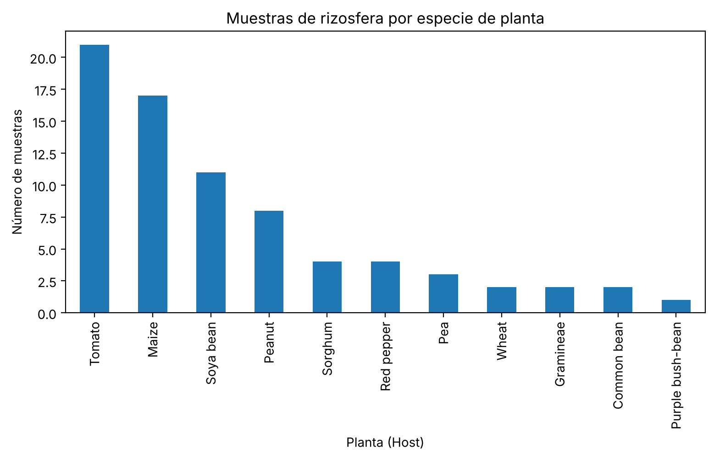
siendo el tomate la planta con más muestras, de las cuales al menos 20 provienen de un país conocido, ver:
Código
host_value ="Tomato"tomato_meta = metadata_df.loc[ metadata_df["host_name"].eq(host_value) & metadata_df["country"].notna()].copy().sort_values("country")tomato_counts = counts_df.loc[:, tomato_meta.index]nonempty = tomato_counts.sum(axis=0) >0tomato_counts = tomato_counts.loc[:, nonempty]tomato_meta = tomato_meta.loc[tomato_counts.columns]if tomato_counts.shape[1] <2:raiseValueError("Se necesitan al menos dos muestras de tomate con conteos y país")country_sizes = tomato_meta["country"].value_counts().sort_index()print("Muestras de tomate por país:")display(country_sizes.to_frame("n_muestras"))if (country_sizes <5).any():print("Advertencia: algunos países tienen menos de 5 muestras; interpretar con cautela.")
Muestras de tomate por país:
n_muestras
country
China
5
Mexico
5
Netherlands
6
South Africa
5
6.2 Análisis de Abundancias
Para comparar perfiles de composición, normalizamos cada muestra por separado:
\[\text{abundancia relativa} = \frac{\text{conteo del taxón}}{\text{suma de conteos de esa muestra}}.\]
Agrupamos características con la misma etiqueta de género; las etiquetas ausentes se conservan como Sin asignar. En estas gráficas, Otros géneros representa la abundancia que no está entre los 10 principales.
Código
# 1. Primero limpiamos las etiquetas de génerodef clean_genus(x):if pd.isna(x) orstr(x).strip().lower() in ("", "none", "nan"):return"Sin asignar"returnstr(x).strip()# 2. Obtener las etiquetas taxonómicas correspondientes a cada fila de la matriz de conteosgenus_labels = taxonomy_df["genus"].reindex(counts_df.index).map(clean_genus)# 3. Agrupamos los conteos por género: sumar los conteos de los taxones que pertenecen al mismo génerogenus_counts = counts_df.groupby(genus_labels, sort=False).sum()# 4. Calculamos abundancias relativas por muestragenus_rel = genus_counts.div(genus_counts.sum(axis=0).replace(0, np.nan), axis=1)# 5. Identificamos los 10 géneros más abundantes: calcular abundancia relativa promedio entre muestras y excluir observaciones sin género asignadotop10_global = genus_rel.drop(index="Sin asignar", errors="ignore").mean(axis=1).nlargest(10).index.tolist()# 6. Calculamos abundancias promedio por especie de plantarel_by_host = genus_rel.T.join(metadata_df[["host_name"]]).groupby("host_name").mean().T# 7. Preparamos los datos para la gráficahost_plot = rel_by_host.reindex(top10_global).T.copy()host_plot["Otros géneros"] = (1- host_plot.sum(axis=1)).clip(lower=0)# 8. Realizamos el plotax = host_plot.plot.bar(stacked=True, figsize=(11, 5), colormap="tab20")ax.set(xlabel="Especie de planta", ylabel="Abundancia relativa media", title="Composición microbiana de la rizosfera por especie de planta")# Los géneros van en cursiva, manipulamos la leyenda para eso# Obtener los elementos de la leyendahandles, labels = ax.get_legend_handles_labels()# Crear la leyendalegend = ax.legend(handles, labels, bbox_to_anchor=(1.02, 1), loc="upper left")# Poner en cursivas los nombres de los génerosfor text in legend.get_texts():if text.get_text() !="Otros taxones y sin asignar": text.set_fontstyle("italic")plt.xticks(rotation=45, ha="right")plt.tight_layout()plt.show()
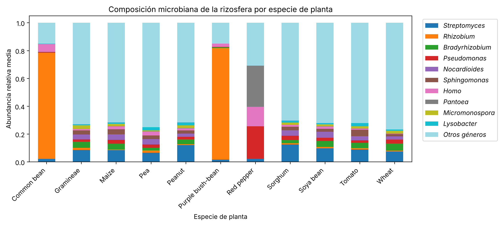
Notemos que la abundancia relativa de los géneros varía entre plantas y entre países. Por ejemplo, el género Pseudomonas es menos abundante en tomate que en maíz, mientras que Sphingonomas es más abundante en el tomate que en el resto de las plantas presentes. Dada la variabilidad de abundancias en las muestras de tomate, nos interesa analizar estas.
6.2.1 Perfiles de las muestras de tomate por país
Veamos la distribución de abundancias de los 10 generos más abundantes en las muestras de tomate, agrupadas por país:
Código
# 1. Seleccionar las muestras de tomatetomato_genus_rel = genus_rel.loc[:, tomato_meta.index]# 2. Seleccionar los 10 géneros más abundantes (excluyendo los no asignados)top10_tomato = tomato_genus_rel.drop(index="Sin asignar", errors="ignore").mean(axis=1).nlargest(10).index.tolist()# 3. Preparar los datos para la gráficaplot_samples = tomato_genus_rel.reindex(top10_tomato).T.copy()plot_samples["Otros taxones y sin asignar"] = (1- plot_samples.sum(axis=1)).clip(lower=0)# 4. Agregar el país y ordenar las muestrasplot_samples["country"] = tomato_meta.loc[plot_samples.index, "country"]plot_samples = plot_samples.sort_values("country")# Guardar los países antes de graficarcountries = plot_samples.pop("country")# 5. Crear la gráficafig, ax = plt.subplots(figsize=(max(12, 0.5*len(plot_samples)), 6))plot_samples.plot.bar(stacked=True, ax=ax, colormap="tab20", width=0.85)ax.set(title="Rizosfera de tomate: composición relativa por muestra", xlabel="", ylabel="Abundancia relativa")# 6. Mostrar los identificadores de las muestrasax.set_xticklabels(plot_samples.index, rotation=90, fontsize=8)# 7. Agregar separadores y nombres de paísesfor country in countries.unique(): positions = np.where(countries.values == country)[0] start = positions[0] end = positions[-1] center = (start + end) /2# Nombre del país debajo de las muestras ax.text(center, -0.35, str(country), ha="center", va="top", fontsize=11, fontweight="bold", transform=ax.get_xaxis_transform())# Separador entre paísesif end <len(plot_samples) -1: ax.axvline(end +0.5, color="gray", linestyle="--", linewidth=0.8)# 8. Leyenda con géneros en cursivashandles, labels = ax.get_legend_handles_labels()legend = ax.legend(handles, labels, bbox_to_anchor=(1.02, 1), loc="upper left")for text in legend.get_texts():if text.get_text() !="Otros taxones y sin asignar": text.set_fontstyle("italic")# 9. Ajustar los márgenesplt.subplots_adjust(bottom=0.38, right=0.78)plt.show()
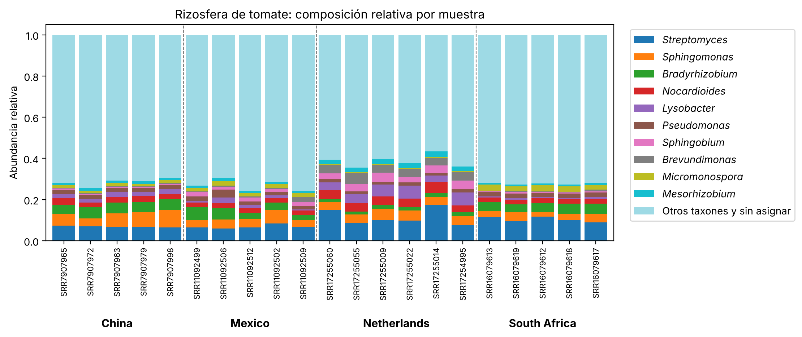
Podemos observar que las distribuciones son muy similares entre países.
6.3 Red de Similitud
Una de las primeras formas de entender la forma de los datos es a través de la construcción de redes de similitud. Estas redes nos permiten visualizar cómo se relacionan entre sí las diferentes muestras o especies, identificando patrones y estructuras en los datos.
Para medir similitud entre muestras, podemos utilizar métricas como la disimulitud de Bray-Curtis, que cuantifica la las diferencias entre dos muestras basándose en sus abundancias relativas. La disimilitud de Bray-Curtis para abundancias relativas (no negativas) (p) y (q) se define como:
cuando las abundancias relativas están normalizadas a 1. Esta función varía entre 0 (muestras idénticas) y 1 (muestras completamente diferentes). Cabe resaltar, que la disimilitud de Bray-Curtis no es una métrica de distancia en el sentido estricto, ya que no cumple con la desigualdad triangular. Sin embargo, es ampliamente utilizada en ecología y microbiología para comparar comunidades biológicas.
Calcularemos la matriz de Bray-Curtis para los datos de abundancia de los microorganismos presentes en las muestras de Tomate, y mostrando las agrupaciones de las muestras según el continente de origen.
Código
host_value ='Tomato'# Normalizar por muestra antes de calcular Bray-Curtisrelative_counts_df = counts_df.div( counts_df.sum(axis=0).replace(0, np.nan), axis=1)# Alineamos la metadata de las muestras de BIOM, luego mantenemos las muestras de tomate con un país conocidotomato_meta = metadata_df.reindex(relative_counts_df.columns)tomato_meta = tomato_meta.loc[ tomato_meta['host_name'].eq(host_value) & tomato_meta['country'].notna()].sort_values(['country'], kind='stable')tomato_samples = tomato_meta.index.tolist()iflen(tomato_samples) <2:raiseValueError(f'Need at least two {host_value} samples with country metadata.')# Calculamos la matriz de distancia de Bray-Curtis para las muestras de tomate y creamos un DataFrame para facilitar la visualizaciónbraycurtis_tomato = pairwise_distances( relative_counts_df.loc[:, tomato_samples].T, metric='braycurtis')braycurtis_tomato_by_country = pd.DataFrame( braycurtis_tomato, index=tomato_samples, columns=tomato_samples)# Creamos un heatmap de la matriz de distancia de Bray-Curtis para las muestras de tomate, agrupadas por paísfig, ax = plt.subplots( figsize=(max(12, 0.22*len(tomato_samples) +5), max(10, 0.18*len(tomato_samples) +5)))sns.heatmap( braycurtis_tomato_by_country, cmap='viridis', vmin=0, vmax=1, xticklabels=tomato_samples, yticklabels=tomato_samples, cbar_kws={'label': 'Bray-Curtis distance'}, ax=ax)# Agregamos líneas de separación y etiquetas de país en el heatmapcountry_groups = tomato_meta.groupby('country', sort=False).size()boundary =0for country, sample_count in country_groups.items():if boundary >0: ax.axvline(boundary, color='red', linestyle='--', linewidth=1.5) ax.axhline(boundary, color='red', linestyle='--', linewidth=1.5) ax.text( boundary + sample_count /2,1.02, country, ha='center', va='bottom', fontsize=9, transform=ax.get_xaxis_transform() ) boundary += sample_countax.set_title(f'Bray-Curtis Distance for {host_value} Samples, Grouped by Country', pad=42)ax.set_xlabel('Samples (ordered by country)')ax.set_ylabel('Samples (ordered by country)')ax.tick_params(axis='x', labelrotation=90, labelsize=7)ax.tick_params(axis='y', labelsize=7)fig.tight_layout()heatmap_dir = os.path.join(RESULTS_PATH, 'Distancia_Bray-curtis', 'Heatmap')os.makedirs(heatmap_dir, exist_ok=True)save_path = os.path.join(heatmap_dir, 'tomato_samples_by_country_braycurtis.jpg')fig.savefig(save_path, bbox_inches='tight', dpi=150)plt.show()plt.close(fig)print(f'Samples included: {len(tomato_samples)}')print(country_groups)print(f'Matrix shape: {braycurtis_tomato_by_country.shape}')print(f'Saved to: {save_path}')
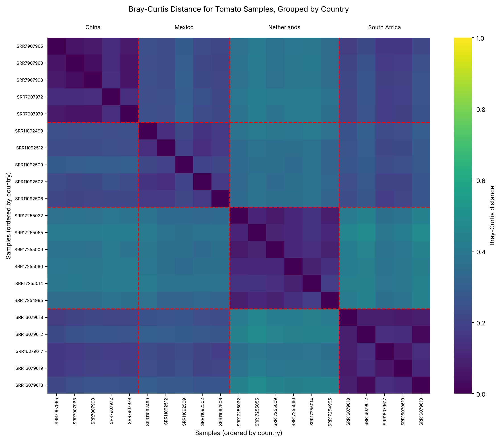
Samples included: 21
country
China 5
Mexico 5
Netherlands 6
South Africa 5
dtype: int64
Matrix shape: (21, 21)
Saved to: resultados/leccion_4/Distancia_Bray-curtis/Heatmap/tomato_samples_by_country_braycurtis.jpg
Esto nos permitirá observar cómo varía la diversidad microbiana según el continente y cómo se relaciona con la especie de planta y el tipo de microorganismo presente en cada muestra. Del heatmap podemos observar que las muestras de tomate provenientes de diferentes continentes presentan patrones de abundancia similares, lo que sugiere que la diversidad microbiana en estas muestras está influenciada por factores ambientales y geográficos.
Una vez que tenemos la matriz de Bray-Curtis, podemos construir un grafo de similitud de microorganismos en las muestras de Tomate, donde los nodos representan los diferentes microorganismos y las aristas representan la coocurrencia entre ellos. Esto nos permitirá observar cómo se relacionan los diferentes microorganismos presentes en las muestras de Tomate y cómo varía la diversidad microbiana según el continente y la especie de planta.
Código
max_braycurtis_distance =0.2sample_meta = metadata_df.reindex(braycurtis_tomato_by_country.index)sample_meta = sample_meta.loc[sample_meta['country'].notna()]sample_ids = sample_meta.index.intersection(braycurtis_tomato_by_country.index, sort=False)distance_df = braycurtis_tomato_by_country.loc[sample_ids, sample_ids]sample_meta = sample_meta.loc[sample_ids]country_names =sorted(sample_meta['country'].unique())country_palette = { country: plt.cm.tab10(i %10)for i, country inenumerate(country_names)}tomato_sample_graph = nx.Graph(host_name='Tomato')for sample_id, row in sample_meta.iterrows(): tomato_sample_graph.add_node(sample_id, country=row['country'])for sample_a, sample_b in combinations(sample_ids, 2): distance = distance_df.loc[sample_a, sample_b]if distance <= max_braycurtis_distance: tomato_sample_graph.add_edge( sample_a, sample_b, braycurtis_distance=distance, similarity=1- distance )country_centers = { country: (2.4* np.cos(2* np.pi * i /len(country_names)),2.4* np.sin(2* np.pi * i /len(country_names)) )for i, country inenumerate(country_names)}pos = {}for country in country_names: country_samples = [ sample_id for sample_id in tomato_sample_graph.nodesif tomato_sample_graph.nodes[sample_id]['country'] == country ] local_pos = nx.circular_layout(country_samples, scale=0.85) center_x, center_y = country_centers[country]for sample_id, (x, y) in local_pos.items(): pos[sample_id] = (center_x + x, center_y + y)fig, ax = plt.subplots(figsize=(15, 10))edge_similarities = [ tomato_sample_graph[u][v]['similarity']for u, v in tomato_sample_graph.edges]if edge_similarities: nx.draw_networkx_edges( tomato_sample_graph, pos, ax=ax, width=[1+4* value for value in edge_similarities], edge_color=edge_similarities, edge_cmap=plt.cm.viridis, edge_vmin=1- max_braycurtis_distance, edge_vmax=1, alpha=0.65 )nx.draw_networkx_nodes( tomato_sample_graph, pos, ax=ax, node_size=700, node_color=[ country_palette[tomato_sample_graph.nodes[node]['country']]for node in tomato_sample_graph.nodes ], edgecolors='black')nx.draw_networkx_labels( tomato_sample_graph, pos, ax=ax, labels={node: node for node in tomato_sample_graph.nodes}, font_size=7)ax.legend( handles=[ plt.Line2D([], [], marker='o', linestyle='', color=country_palette[country], label=country)for country in country_names ], title='Country', loc='upper left', bbox_to_anchor=(1.28, 1.0))if edge_similarities: edge_mapper = plt.cm.ScalarMappable( norm=plt.Normalize(vmin=1- max_braycurtis_distance, vmax=1), cmap=plt.cm.viridis ) fig.colorbar(edge_mapper, ax=ax, label='Sample similarity (1 - Bray-Curtis)')ax.set_title(f'Tomato sample similarity graph (Bray-Curtis <= {max_braycurtis_distance})')ax.axis('off')fig.tight_layout()graph_dir = os.path.join(RESULTS_PATH, 'Grafos', 'Tomato')os.makedirs(graph_dir, exist_ok=True)save_path = os.path.join(graph_dir, 'tomato_braycurtis_similarity_graph.png')fig.savefig(save_path, bbox_inches='tight', dpi=150)plt.show()plt.close(fig)print(f'Nodes: {tomato_sample_graph.number_of_nodes()}')print(f'Edges: {tomato_sample_graph.number_of_edges()}')print(f'Countries: {len(country_names)}')print(f'Saved to: {save_path}')
Nodes: 21
Edges: 56
Countries: 4
Saved to: resultados/leccion_4/Grafos/Tomato/tomato_braycurtis_similarity_graph.png
Cada nodo es una muestra. Se añade una arista si su disimilitud es menor o igual a \(\varepsilon\). El umbral de 0.2 se utiliza como ejemplo visual, no como resultado óptimo ni como evidencia de agrupación. La posición de los nodos se calcula a partir de la red, sin imponer centros geográficos. Los colores solo se añaden al final.
Tip✏️ Ejercicio 1: ¿Cómo cambia el grafo con diferentes umbrales? (5 min)
A partir de braycurtis_tomato_by_country, calcula el rango de disimilitud, y construye un grafo de similitud basado en los quartiles del rango de disimilitud. Compara los grafos obtenidos con diferentes umbrales y describe cómo cambia la estructura de la red.
6.3.1 Análisis de la Red de Similitud
A simple vista, no podemos determinar cuál es la estructura de la red de similitud que describe mejor la relación entre las muestras de tomate y esto es debido a la dependencia de la red con el umbral de disimilitud que se utiliza para construirla (recordemos, que inicialmente fue 0.2).
Una forma de analizar estas relaciones es a través de la topología de la red, que nos permite identificar patrones y estructuras en los datos que no son evidentes a simple vista. Para ello, podemos utilizar técnicas de Análisis Topológico de Datos (TDA), que nos permiten estudiar la forma de los datos y cómo se relacionan entre sí.
El TDA nos permite identificar componentes conectados, ciclos y otras estructuras topológicas en la red de similitud, lo que nos ayuda a entender mejor cómo se relacionan las diferentes muestras de tomate y cómo varía la diversidad microbiana según el continente y la especie de planta.
Introducción al TDA
Para estudiar datos usando la topología, necesitamos construir un objeto matemático que nos permita capturar información sobre la forma de los datos. Los datos son cúmulos de puntos en \(\mathbb{R}^n\), y los complejos simpliciales son una forma de construir un objeto topológico a partir de estos puntos.
Un complejo simplicial es un conjunto de simplices, que son generalizaciones de triángulos y tetraedros a dimensiones superiores. Por ejemplo, un 0-simplex es un punto, un 1-simplex es una línea, un 2-simplex es un triángulo y un 3-simplex es un tetraedro.
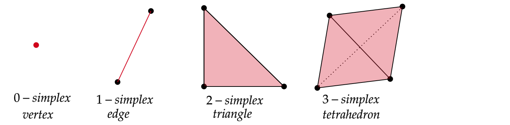
Vértices, aristas y simples de mayor dimensión
Con los simplejos, podemos construir un complejo simplicial, que es un conjunto de simplejos que cumplen ciertas condiciones de intersección. Por ejemplo, si tenemos un conjunto de puntos en el plano, podemos construir un complejo simplicial conectando los puntos con líneas y formando triángulos.
Ejemplo de complejo simplicial
Una forma construir un complejo simplicial a partir de un conjunto de puntos es mediante el complejo de Vietoris-Rips. Este complejo se construye a partir de un conjunto de puntos y un parámetro \(\varepsilon\), que determina la distancia máxima entre los puntos para que se consideren conectados.
\[ \text{VR}_\varepsilon(X) = \{ \sigma \subseteq X : d(x_i, x_j) \leq \varepsilon \text{ para todos } x_i, x_j \in \sigma \}\]
Sin embargo, tenemos el mismo problema con la red de similitud: la estructura del complejo simplicial depende del parámetro \(\varepsilon\). Para resolver esto, podemos utilizar filtraciones, que nos permiten estudiar cómo cambia la topología de los datos a medida que variamos el parámetro \(\varepsilon\).
Una filtración es una secuencia de complejos simpliciales \(\{K_\varepsilon\}_{\varepsilon \geq 0}\), donde cada complejo \(K_\varepsilon\) está contenido en el siguiente \(K_{\varepsilon'}\) para \(\varepsilon < \varepsilon'\). Esto nos permite estudiar cómo cambian las estructuras topológicas a medida que aumentamos el parámetro \(\varepsilon\).
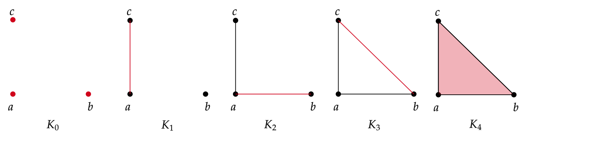
Ejemplo de filtración
Con la topología podemos medir cómo cambian las estructuras topológicas a medida que aumentamos el parámetro \(\varepsilon\). Por ejemplo, podemos medir cómo cambian los componentes conectados (es decir, cómo se van conectando los puntos) y los ciclos (es decir, cómo se forman bucles) en la red de similitud a medida que aumentamos el parámetro \(\varepsilon\). Esto nos permite construir un diagrama de persistencia, que nos muestra cómo cambian las estructuras topológicas a medida que aumentamos el parámetro \(\varepsilon\), el eje \(x\) representa el parámetro \(\varepsilon\) dónde se nacieron las estructuras topológicas (componentes no conectadas o ciclos) y el eje \(y\) representa el parámetro \(\varepsilon\) dónde `murieron’ las estructuras topológicas (donde se conectan componentes o se rellenan los ciclos).
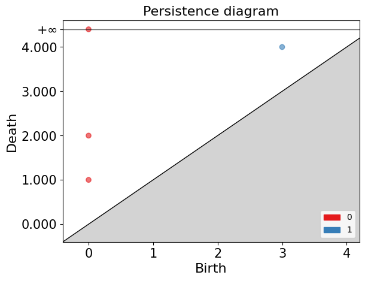
Ejemplo de diagrama de persistencia
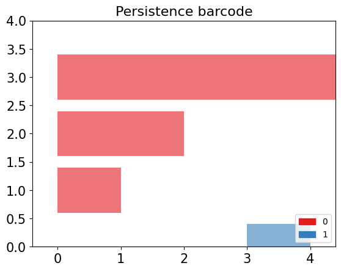
Ejemplo de código de barras de persistencia
Este diagrama nos permite identificar el tipo de estructuras topológicas. Ver ejemplos en:
Para realizar el análisis topológico (homología persistente) de la red de similitud, utilizaremos la función
Esta función nos permite construir un complejo simplicial Vietoris-Rips a partir de la matriz de disimilitud de Bray-Curtis y calcular la homología persistente de la red de similitud. La función devuelve un objeto que contiene la información sobre los complejos simpliciales y los diagramas de persistencia. A continuación, presentamos los diagramas obtenidos de esta función para las muestras de tomate:
Código
create_complex(braycurtis_tomato)
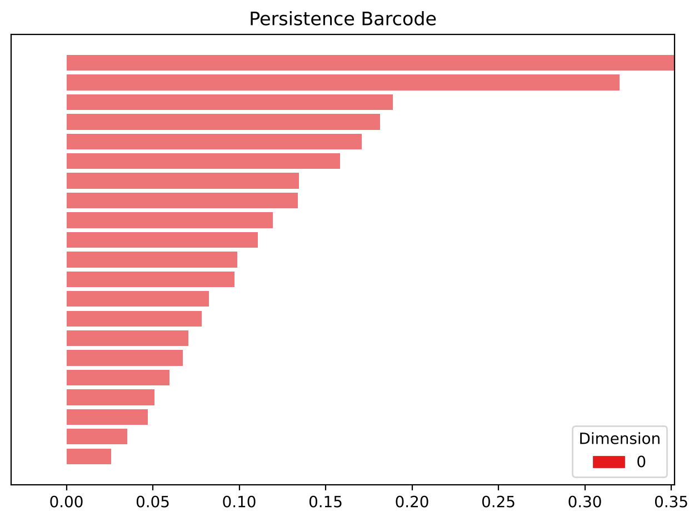
Persistence diagram saved to: resultados/leccion_4/Diagramas_Persistencia/persistence_diagram.png
Persistence barcode saved to: resultados/leccion_4/Diagramas_Persistencia/persistence_barcode.png
Del diagrama podemos observar que no existen ciclos persistentes en la red de similitud. Lo que indica que estas muestras de Tomate presentan una estructura muy cercana a un árbol, lo que sugiere que los microorganismos presentes en estas muestras están altamente organizados y presentan una estructura jerárquica. Esto podría indicar que los microorganismos presentes en estas muestras tienen una relación simbiótica o mutualista, lo que podría ser beneficioso para la planta de Tomate.
6.4 Fundamentos de las Redes de Coocurrencia
En microbiología, la coocurrencia se refiere a la presencia simultánea de diferentes especies microbianas en un mismo entorno o muestra. Analizar la coocurrencia nos permite identificar posibles interacciones entre especies, como simbiosis, competencia o dependencia mutua.
Una red de coocurrencia es un grafo donde los nodos representan las especies microbianas y las aristas indican la coocurrencia entre ellas. En el contexto de los datos de microbiomas, estas redes nos permiten visualizar y analizar las interacciones entre diferentes especies en un ecosistema.
Para medir la coocurrencia entre especies, podemos utilizar diferentes métricas de correlación, como:
Correlación de Pearson: mide la relación lineal entre dos variables \[r_{xy} = \frac{\sum (x_i - \bar{x})(y_i - \bar{y})}{\sqrt{\sum (x_i - \bar{x})^2 \sum (y_i - \bar{y})^2}}.\]
Correlación de Spearman: mide la relación monotónica entre dos variables independientes \[\rho = 1 - \frac{6 \sum d_i^2}{n(n^2 - 1)}.\]
Información mutua: mide la cantidad de información que una variable proporciona sobre otra \[I(X;Y) = \sum_{x \in X} \sum_{y \in Y} p(x,y) \log \frac{p(x,y)}{p(x)p(y)}.\]
Estas métricas nos ayudan a cuantificar la fuerza y dirección de la relación entre las abundancias de diferentes especies. En esta lección nos en la correlación de Spearman para construir la red de coocurrencia, ya que es menos sensible a valores atípicos y no asume una relación lineal entre las variables.
Para cada país calculamos Spearman entre pares de géneros a través de sus muestras. Si un género no varía, la correlación es indefinida; no la reemplazamos por cero. Para mantener un conjunto común de nodos entre países, retiramos los géneros constantes en cualquiera de los países elegibles. Si quedan menos de dos géneros, detenemos esta sección.
Exploramos tres transformaciones de la correlación \(\rho\):
Absoluta:\(d=1-|\rho|\), asociación fuerte de cualquier signo.
Estas matrices son disimilitudes construidas para explorar filtraciones, no distancias métricas en general. El valor 1 para asociaciones de signo contrario o nulas significa que la arista entra al final de la filtración, no que exista una relación biológica.
Antes de Calcular los grafos de co-ocurrencia, ocupamos definir algunas funciones auxiliares que nos permitirán realizar los cálculos de manera más eficiente y organizada. Estas funciones incluirán la creación de matrices de correlación de Spearmen, matriz de valores P, y traducción de correlación a distancia para poder construir los grafos.
Código
def spearman_corr_matrix(working_directory: str, suffix: str, genus_df_filtered: pd.DataFrame): os.makedirs(working_directory, exist_ok=True) rel_abund = genus_df_filtered.div(genus_df_filtered.sum(axis=0), axis=1) rel_abund = rel_abund.replace([np.inf, -np.inf], np.nan) rel_abund = rel_abund.loc[rel_abund.nunique(axis=1, dropna=True) >1]if rel_abund.shape[0] <2:raiseValueError('At least two variable genera are needed to calculate correlations.') result = stats.spearmanr(rel_abund.T, axis=0, nan_policy='omit') genera = rel_abund.index corr_values = np.array(result.statistic, copy=True) pval_values = np.array(result.pvalue, copy=True) np.fill_diagonal(corr_values, 1.0) np.fill_diagonal(pval_values, 0.0) corr_matrix = pd.DataFrame(corr_values, index=genera, columns=genera) pval_matrix = pd.DataFrame(pval_values, index=genera, columns=genera) corr_matrix.to_csv(os.path.join(working_directory, f'corr_matrix_{suffix}.csv')) pval_matrix.to_csv(os.path.join(working_directory, f'pval_matrix_{suffix}.csv'))return corr_matrix, pval_matrix
Por ejemplo, aquí se muestran las matrices de distancias calculadas a partir de la correlación de Spearman para el país South Africa:
Código
distance_matrices = [ ('Absoluta', corr_matrix_abs_south_africa), ('Positiva', corr_matrix_pos_south_africa), ('Negativa', corr_matrix_neg_south_africa),]fig, axes = plt.subplots(1, 3, figsize=(18, 6), constrained_layout=True)for ax, (title, matrix) inzip(axes, distance_matrices): image = ax.imshow(matrix.to_numpy(), cmap='viridis', vmin=0, vmax=1, interpolation='nearest') ax.set_title(f'Distancia de correlación {title.lower()}') ax.set_xlabel('Géneros') ax.set_ylabel('Géneros') ax.set_xticks([]) ax.set_yticks([])fig.colorbar(image, ax=axes, label='Distancia', shrink=0.8)fig.suptitle('Matrices de distancia derivadas de Spearman: Tomato, South Africa')heatmap_dir = os.path.join(corr_output_dir, 'Heatmap')os.makedirs(heatmap_dir, exist_ok=True)save_path = os.path.join(heatmap_dir, 'tomato_south_africa_correlation_distances.jpg')fig.savefig(save_path, bbox_inches='tight', dpi=200)plt.show()plt.close(fig)print(f'Matrix dimensions: {corr_matrix_abs_south_africa.shape}')print(f'Saved to: {save_path}')
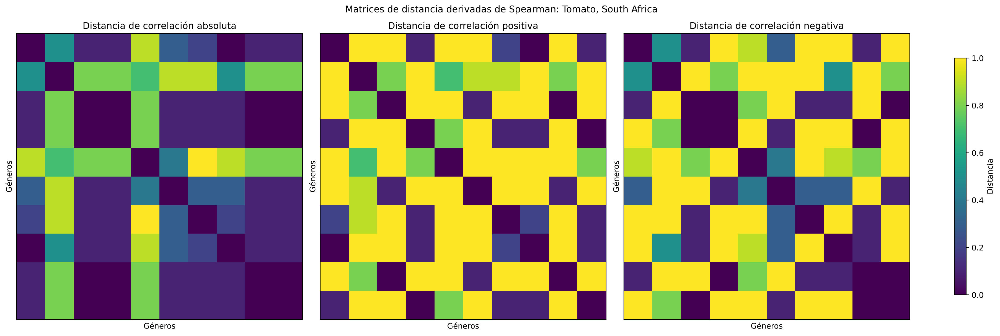
Matrix dimensions: (10, 10)
Saved to: resultados/leccion_4/Corr_Spearman/South_Africa/Heatmap/tomato_south_africa_correlation_distances.jpg
6.5 Construcción de Grafos de Coocurrencia por País
Se representa una arista si \(d \leq 0.3\) (equivale a \(|\rho|\geq 0.7\) para la versión absoluta). El umbral es ilustrativo y las aristas no se interpretan como interacciones. Usamos las mismas posiciones para los géneros en todos los países, para no sugerir diferencias por el algoritmo de dibujo.
En el siguiente código, se construyen los grafos de coocurrencia para South Africa, mostrando las relaciones absolutas, positivas y negativas entre los géneros microbianos presentes en las muestras de tomate. Cada nodo representa un género microbiano y cada arista representa una relación de coocurrencia entre dos géneros.
South Africa: absolute=25 edges, positive=13 edges, negative=12 edges -> resultados/leccion_4/Corr_Spearman/Networks/Tomato_top10/South_Africa/South_Africa_correlation_networks.png
Generated correlation networks for 1 countries.
Tip✏️ Ejercicio 2: ¿Y los demás países? (5 min)
A partir de las funciones definidas, construye los grafos de coocurrencia para los demás países presentes en las muestras de tomate. Compara la estructura de los grafos obtenidos y describe cómo varían las relaciones de coocurrencia entre los diferentes países.
6.5.1 TDA en Grafos de Coocurrencia
De nuevo, nuestras observaciones iniciales de los grafos de coocurrencia dependen del umbral elegido para construirlos. Para obtener una visión más completa de la estructura topológica de los datos, podemos aplicar técnicas de Análisis Topológico de Datos (TDA) a los grafos de coocurrencia.
Tomemos como ejemplo a los datos de South Africa. Calculamos el diagrama de persistencia para los grafos de coocurrencia absoluta, positiva y negativa, utilizando filtraciones basadas en la disimilitud calculada a partir de la correlación de Spearman.
Persistence diagram saved to: resultados/leccion_4/Diagramas_Persistencia/South_Africa_absolute_top_10_persistence_diagram.png
Persistence barcode saved to: resultados/leccion_4/Diagramas_Persistencia/South_Africa_absolute_top_10_persistence_barcode.png
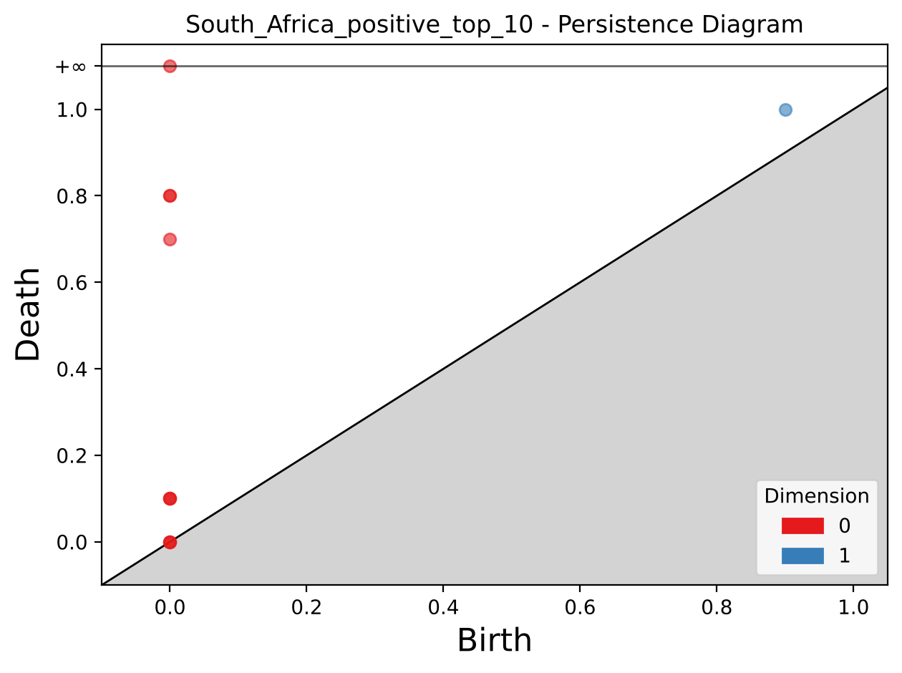
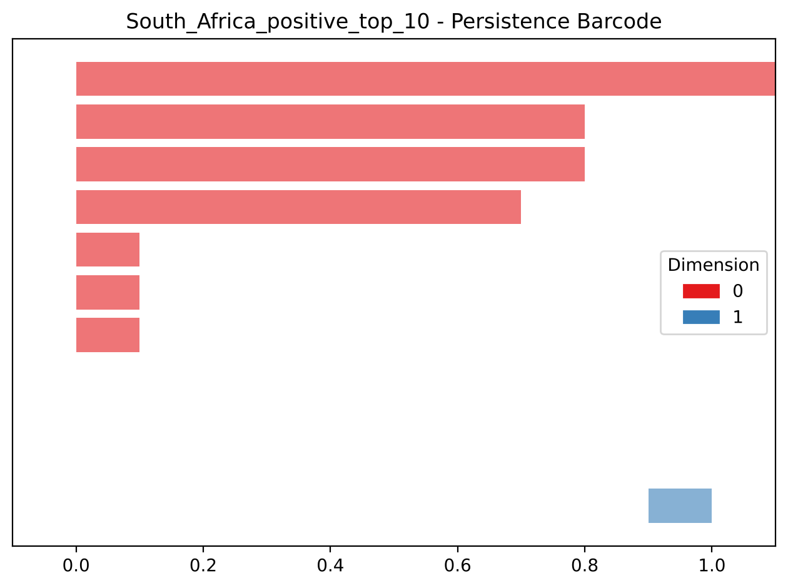
Persistence diagram saved to: resultados/leccion_4/Diagramas_Persistencia/South_Africa_positive_top_10_persistence_diagram.png
Persistence barcode saved to: resultados/leccion_4/Diagramas_Persistencia/South_Africa_positive_top_10_persistence_barcode.png
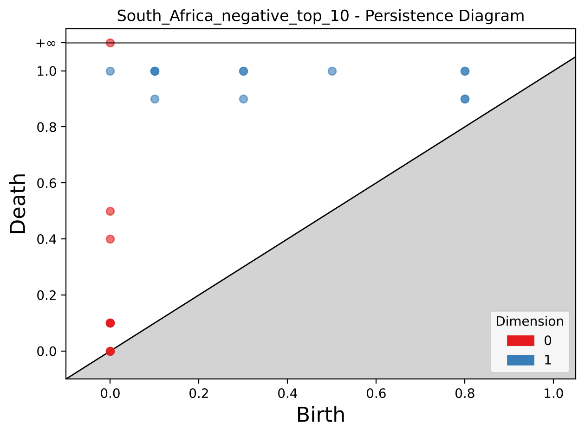
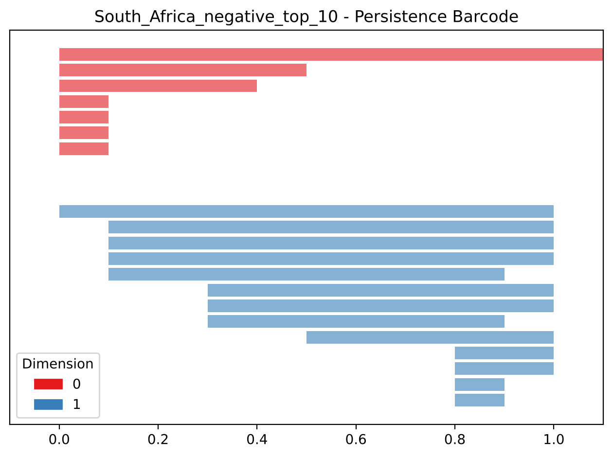
Persistence diagram saved to: resultados/leccion_4/Diagramas_Persistencia/South_Africa_negative_top_10_persistence_diagram.png
Persistence barcode saved to: resultados/leccion_4/Diagramas_Persistencia/South_Africa_negative_top_10_persistence_barcode.png
Generated persistence diagrams for 3 distance matrices using 10 top genera.
Podemos observar que tanto los diagramas de persistencia absoluta y positiva presentan un patrón similar, con un ciclo de baja persistena lo que podría indicar que hay una estructura cíclica en la red pero no muy robusta. Por otro lado, el diagrama de persistencia negativa presentan multiples ciclos de alta persistencia, lo que sugiere que hay una estructura cíclica más robusta en la red de coocurrencia negativa. Esto podría indicar que las relaciones negativas entre los géneros microbianos son más estables y persistentes al cambio de parámetros de Spearman, lo que podría tener implicaciones importantes para la dinámica de la comunidad microbiana en las muestras de tomate.
Tip✏️ Ejercicio 3: ¿Y los demás países? (5 min)
A partir de las funciones definidas, estudia la estructura topológica de los grafos de coocurrencia para los demás países presentes en las muestras de tomate. Compara los diagramas de persistencia obtenidos y describe cómo varían las estructuras topológicas entre los diferentes países.
6.6 Comparación de Diagramas de Persistencia entre Países
¿La topología de la red de un país difiere de la de otro? Uno pensaría que conociendo las estructuras topológicas de los grafos de coocurrencia de cada país podríamos compararlas directamente y obtener conclusiones sobre la similitud ecológica entre los países. En TDA, la distancia de Wasserstein es una métrica que nos permite comparar diagramas de persistencia y cuantificar la diferencia entre ellos. Esta distancia se calcula como el costo mínimo de transformar un diagrama de persistencia en otro, considerando tanto la posición de los puntos como su multiplicidad.
La distancia de Wasserstein compara diagramas de persistencia; no mide directamente similitud ecológica. Usamos solo puntos con muerte finita (en \(H_0\) existe una componente esencial con muerte infinita). Comparamos únicamente países con el mismo conjunto de géneros y la misma transformación de correlación. Las distancias calculadas son descriptivas y no constituyen pruebas de significación. Con pocos datos, incluso estas comparaciones pueden ser muy inestables.
Código
from gudhi.hera import wasserstein_distance# South Africa se analiza en el ejemplo principal. Los demás países solo se# incorporan si el estudiante los agrega a countries_to_process.country_persistence = {}if"persistence_south_africa_by_type"inglobals(): country_persistence["South Africa"] = { distance_type: result[0]for distance_type, result in persistence_south_africa_by_type.items() }for country_name, result in correlation_results_by_country.items(): country_persistence[country_name] = { distance_type: persistence_result[0]for distance_type, persistence_result in result["persistence"].items() }country_names =sorted(country_persistence)iflen(country_names) <2:print("La distancia de Wasserstein requiere al menos dos países. ""Agrega países a countries_to_process y vuelve a ejecutar las celdas ""de análisis antes de esta comparación." )else: correlation_types = ["absolute", "positive", "negative"] homology_dimensions = [0, 1, 2] wasserstein_matrices = {}for correlation_type in correlation_types:for dimension in homology_dimensions: distance_matrix = pd.DataFrame(0.0, index=country_names, columns=country_names ) diagrams = {}for country_name in country_names: diagram = country_persistence[country_name][correlation_type] finite_points = [ point for dim, point in diagramif dim == dimension and np.isfinite(point).all() ] diagrams[country_name] = np.asarray( finite_points, dtype=float ).reshape(-1, 2)for i, country_a inenumerate(country_names):for country_b in country_names[i +1:]: diagram_a = diagrams[country_a] diagram_b = diagrams[country_b]iflen(diagram_a) ==0andlen(diagram_b) ==0: distance =0.0else: distance = wasserstein_distance( diagram_a, diagram_b, order=2 ) distance_matrix.loc[country_a, country_b] = distance distance_matrix.loc[country_b, country_a] = distance wasserstein_matrices[(correlation_type, dimension)] = distance_matrix wasserstein_output_dir = os.path.join( corr_output_dir, "Wasserstein", "Tomato_top10" ) os.makedirs(wasserstein_output_dir, exist_ok=True)for correlation_type in correlation_types: fig, axes = plt.subplots(1, len(homology_dimensions), figsize=(16, 5), constrained_layout=True ) max_distance =max( wasserstein_matrices[(correlation_type, dimension)].to_numpy().max()for dimension in homology_dimensions ) vmax = max_distance if max_distance >0else1.0for ax, dimension inzip(axes, homology_dimensions): matrix = wasserstein_matrices[(correlation_type, dimension)] matrix.to_csv( os.path.join( wasserstein_output_dir,f"wasserstein_{correlation_type}_dimension_{dimension}.csv" ) ) sns.heatmap( matrix, annot=True, fmt=".3f", cmap="viridis", vmin=0, vmax=vmax, square=True, ax=ax, cbar=ax is axes[-1] ) ax.set_title(f"Homology dimension {dimension}") ax.set_xlabel("Country") ax.set_ylabel("Country") fig.suptitle(f"Wasserstein distances: {correlation_type} Spearman distances" ) figure_path = os.path.join( wasserstein_output_dir,f"wasserstein_{correlation_type}_top10.jpg" ) fig.savefig(figure_path, bbox_inches="tight", dpi=180) plt.show() plt.close(fig)print(f"{correlation_type}: saved heatmap to {figure_path}")print(f"Countries compared: {country_names}")print(f"Wasserstein matrices saved to: {wasserstein_output_dir}")
La distancia de Wasserstein requiere al menos dos países. Agrega países a countries_to_process y vuelve a ejecutar las celdas de análisis antes de esta comparación.
6.7 Discusión y conclusiones
6.7.1 ¿Qué podemos concluir?
Parte I (muestras): Bray–Curtis resume diferencias de composición microbiana entre muestras de rizosfera de tomate. La red y los diagramas muestran cómo se conectan estas muestras al variar un umbral. Si se observan patrones por país, se describen como hipótesis exploratorias, no como efectos geográficos demostrados.
Parte II (géneros): Spearman permite explorar asociaciones monotónicas entre abundancias relativas de géneros dentro de cada país. Las redes y sus diagramas caracterizan la organización de esas asociaciones estadísticas, no relaciones de simbiosis, mutualismo, antagonismo o coocurrencia demostrada. Distancias Wasserstein pequeñas/grandes no establecen por sí solas similitud/diferencia biológica significativa.
6.7.2 Limitaciones que deben reportarse
Número desigual y posiblemente pequeño de muestras por país; las correlaciones son sensibles a ello.
Abundancias relativas son composicionales y pueden inducir asociaciones espurias; para inferir asociaciones microbianas serían preferibles enfoques especializados y validación independiente.
Posibles variables de confusión (suelo, ubicación específica, lote, metodología de secuenciación, profundidad y procesamiento).
Elección de nivel taxonómico (género) y de umbrales visuales; revisar sensibilidad.
La filtración de Vietoris–Rips usa qué métrica.
6.7.3 Preguntas para discutir en el taller
¿Qué cambia si se modifica el umbral de la red de Bray–Curtis?
¿Por qué un triángulo del grafo no necesariamente representa una clase de \(H_1\)?
¿Por qué no podemos interpretar una correlación positiva como mutualismo?
¿Qué cambiaría si los países tuvieran el mismo número de muestras?
¿Cómo distinguir una descripción topológica de una afirmación ecológica causal?
Aguilar, César, Fernando Fontove-Herrera, Anton Pashkov, David A. García-Estrada, Haydeé Contreras-Peruyero, Shaday Guerrero-Flores, Obed Ramírez-Sánchez, y Nelly Sélem-Mojica. 2026. «MicroAgroBiome: a toolkit for exploring specialized metabolism and ecological interactions in rhizosphere microbiomes of cultivated crops». Nucleic Acids Research 54 (D1): D1743-52. https://doi.org/10.1093/nar/gkaf1083.